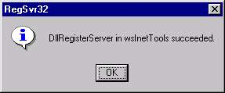

- SMTP: Added "FROM", "TO", "SUBJECT" header fields to fix problem with
some SMTP servers. Not all are as forgiving as Exchange and Sendmail
(GroupWise sucks!).
- HTTP: Added "GetBinary" method to allow downloading of binary data.
Agreement
This program is free for use by individuals and non-profit
organizations. This program may be redistributed only if
full credit is given to the author and the inclusion of
this file unaltered. It may not be used in or with a
product released for commerical distribution.
Disclaimer of Warranty
THIS SOFTWARE AND THE ACCOMPANYING FILES ARE RELEASE
"AS IS" AND WITHOUT WARRANTIES AS TO PERFORMANCE OR
MERCHANTABILITY OR ANY OTHER WARRANTIES WHETHER EXPRESSED
OR IMPLIED. NO WARRANTY OF FITNESS FOR A PARTICULAR
PURPOSE IS OFFERED.
Good data processing procedure dictates that any program be
thoroughly tested with non-critical data before relying on
it. The user must assume the entire risk of using the
program. THE AUTHOR ASSUMES NO LIABILITY FOR USE OF THIS
PRODUCT.
wsInetTools is a COM dll written in C++, that allows to:
- Send SMTP email
- Download web pages (text and binary data)
- Copy wsInetTools.dll to %windir%\system32 directory
-
Run regsvr32 to register the dll with the system.
- Click Start then Run
- Type regsvr32 wsInetTools.dll
- Click OK
- You should see a message that the dll was
successfully registered.

- wsInetTools is ready for use.
Using wsInetTools from Windows Script Host is straight
forward and was specifically written for scripters. It can
be used by any language or environment that can instantiate
COM objects. This includes, but not limited to the following:
- JScript
- VBScript
- C/C++
- Visual Basic
- Visual Basic for Applications (VBA)
- Perl
wsInetTools contains two creatable objects, SMTP and HTTP.
In your code, you must first create an instance of the
desired object, assuming wsInetTools is registered on the
system.
Using the exposed properties and methods, you can send
basic email and download text based documents from the
web. Refer the the samples below.
| ProgID: |
wsInetTools.SMTP |
| Properties: |
MailServer |
|
MailPort |
|
LastError |
| Methods: |
SendMail( from, to, subject, body ) |
// Define variables
var smtp, to, from, subject, body;
// Instantiate COM object
mail = new ActiveXObject( "wsInetTools.SMTP" );
// Enter you mail server
mail.MailServer = "smtp.yourdomain.com";
// Set email properties
from = "youremail@yourdomain.com";
to = "recipient@somedomain.com";
subject = "Testing wsInetTools";
body = "This is just a test message\r\n";
// Send the mail
mail.SendMail( from, to, subject, body );
| ProgID: |
wsInetTools.HTTP |
| Properties: |
LastError |
| Methods: |
GetWebPage( URL ) |
|
GetBinary( remoteFile, localFile ) |
// Define variables
var web, file, url;
// URL of the page want to download
url = "http://www.winscripter.com/content.html";
// Instantiate the COM object
web = new ActiveXObject( "wsInetTools.HTTP" );
// Download the page and store in variable 'file'
file = web.GetWebPage( url );
// Instantiate the COM object
var web = new ActiveXObject( "wsInetTools.HTTP" );
// Define the full path to local and remote files
var remoteBinaryFile = "http://www.winscript.com/ads/ad1.gif"
var localBinaryFile = "e:\\ad1.gif";
// Call GetBinary
web.GetBinary( remoteBinaryFile, localBinaryFile );
Applies to all
-
Connection to Internet or LAN based service required prior
to using wsInetTools.
-
Firewall/Proxy Servers - The current release does not support
firewalls or proxy server that challenge for a name and a password.
Support for these users will be handled in a future release.
SMTP
-
MailPort - is currently hard coded to port 25, the default SMTP port.
A future release will allow changing the port value.
-
Limited testing has been done. Exchange Server 5.5, and Sendmail 8.9.3
If you have successes or failures on other SMTP daemons, send me a note
Daren
-
Does not support attachments.
HTTP
-
GetWebPage - only handles text data. Attempting to download binary
data, such as images, zip files, etc.. will fail.
-
Support for downloading Binary data is now available with GetBinary
© 2000 WinScripter - winscripter.com